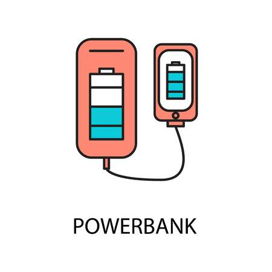
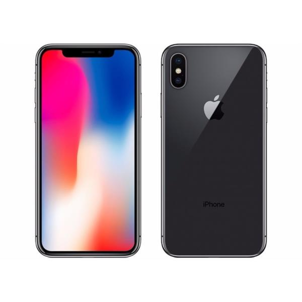
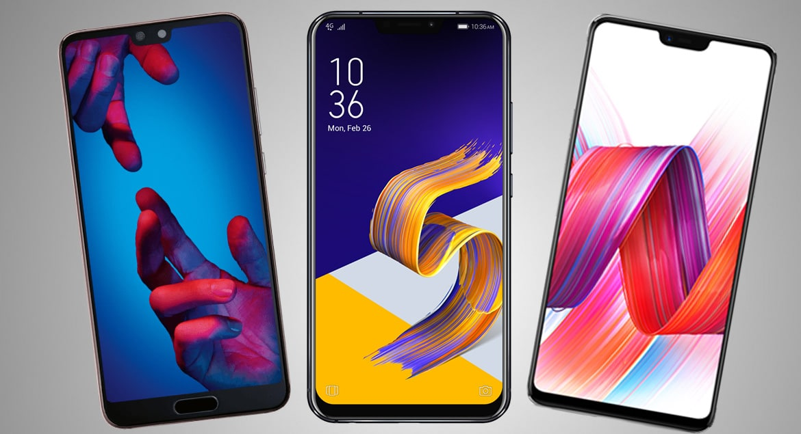
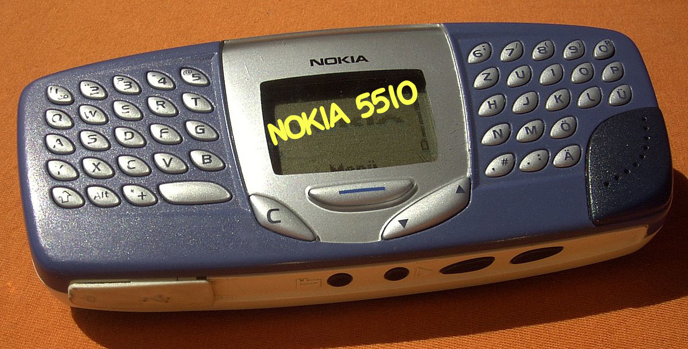

Стоит отметить, что IT индустрия является самой быстроразвивающейся в XXI веке. Современному человеку практически невозможно представить своё существование без любимого девайса под рукой, удобного сервиса для прослушивания музыки или повербанка, который не даст вашему телефону разрдиться в самый неподходящий момент. Выберите то,без чего и дня не проживёте:

В чём на сегодняшний день заключается главная беда смартфонов?
В том, что они потеряли свой собственный дизайн! Вспонмите последнюю хоть сколько-нибудть ощутимую инновацию в дизайнерской сфере.

"Монобровь" у iPhone X, я думаю, что вы вспомнили именно её. А теперь взгляните на флагманские устройства конкурентов, готов поспорить, что эта несчастная "монобровь" появилась уже на каждом флагмане, за примером долго ходить не надо:
Asus, Huawei, LG, Zenfone и другие охотно перенимают это нововведение.

Давайте вспомним о телефонах и их давнишней уникальности, вот как они могли выглядеть раньше

>